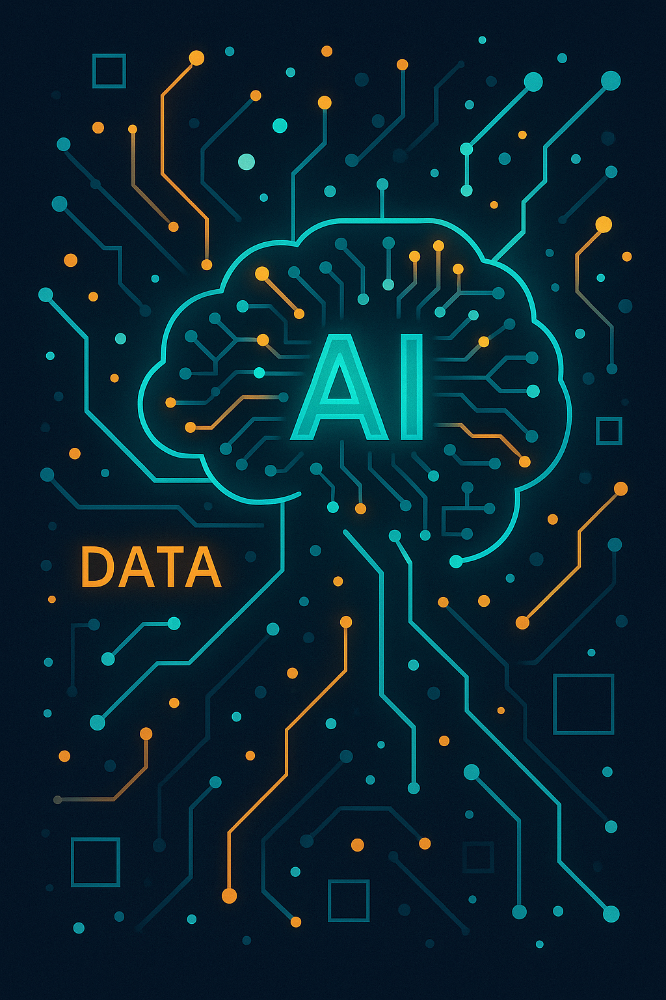

Hackissimo.tech
La democratizzazione dell'IA
Negli ultimi anni l’intelligenza artificiale (IA) ha smesso di essere una tecnologia riservata a poche grandi aziende. Oggi circa la metà delle organizzazioni dichiara di utilizzare soluzioni basate su IA e la rapida diffusione di modelli open source ha abbattuto ulteriori barriere. Piattaforme generative come ChatGPT hanno dimostrato che è possibile creare assistenti digitali capaci di comprendere il linguaggio naturale, sintetizzare informazioni e generare testi e codice. Questa apertura favorisce l’adozione anche da parte di realtà più piccole, che possono sperimentare senza investimenti proibitivi.
La comunità open source ha avuto un ruolo determinante nella democratizzazione: modelli come LLaMA e Falcon sono disponibili gratuitamente per l’uso e l’adattamento, mentre librerie come Hugging Face semplificano l’integrazione in applicazioni e dispositivi. Anche le università e le startup contribuiscono condividendo dataset, modelli e ricerche. Questa dinamica cooperativa produce un circolo virtuoso: più persone possono sperimentare con l’IA, più migliorano gli algoritmi e più aumentano le opportunità di business e innovazione. Inoltre, la potenza di calcolo necessaria è diventata meno costosa grazie a GPU accessibili in cloud.
L’esempio di ChatGPT è emblematico: in soli cinque giorni ha raggiunto un milione di utenti e nel 2025 conta centinaia di milioni di visitatori settimanali, con miliardi di interazioni mensili. Gli utenti non sono più solo sviluppatori, ma insegnanti, studenti, artisti e professionisti che usano l’IA per scrivere, studiare, fare ricerca o gestire attività quotidiane. Questa massiccia partecipazione ha reso l’intelligenza artificiale un fenomeno culturale, spingendo aziende e governi a discutere di regolamentazione, etica e accesso equo. Il futuro della democratizzazione sembra quindi passare per un equilibrio tra apertura e sicurezza: la sfida è promuovere innovazione e inclusività tutelando al contempo la privacy e prevenendo usi impropri.
Guardando avanti, è probabile che l’IA diventi sempre più invisibile, integrata in ogni applicazione e servizio. La democratizzazione porta con sé opportunità economiche, sociali e creative: nuovi mestieri nasceranno dall’interazione con i sistemi intelligenti e la possibilità di personalizzare modelli per esigenze specifiche renderà l’IA un alleato per moltissime professioni. Saper utilizzare questi strumenti in maniera critica e responsabile sarà una competenza chiave per cittadini e imprese del prossimo decennio.
← Torna alla home